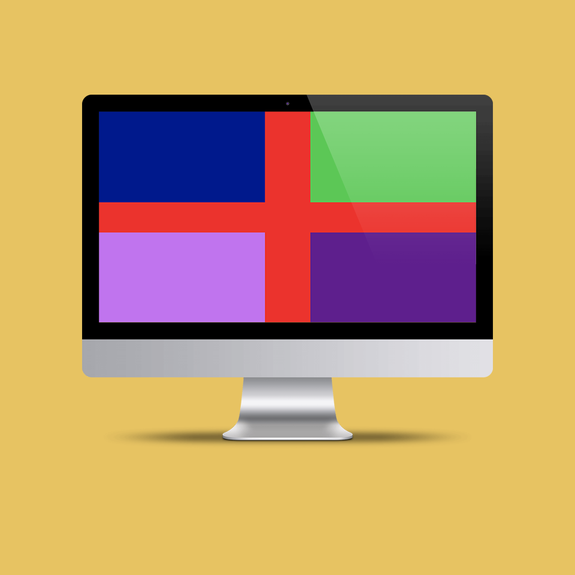

CSS Flag

Hjemmeside kodet i HTML og CSS
Proces
Øvelse der havde til mål at lære én omkring positionering i CSS. Jeg placerede en række kasser oven på hinanden i CSS ved hjælp af CSS for st kreere et flag. Der er lavet 4 mindre kasser i hvert hjørne som er placeret oven på en stor rød firkant ved hjælp af 'position: absolute'. De 4 firkanters position er så styrede nøjagtigt ved hjælp af 'float' og 'margin' funktionerne i CSS.
Kritisk reflektion
Det kunne være sjovt at arbejde med mere komplekse figurere eller flag i CSS, og udfordrer sig selv noget mere. Det kunne være noget med andre former end bare ordinære firkanter.